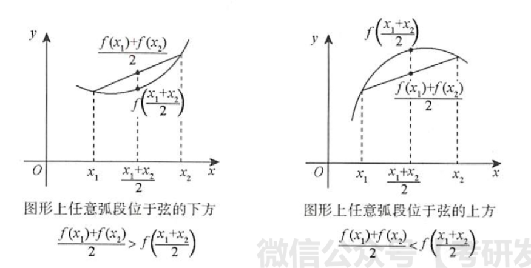

高等数学公式大全（一）
数列极限
章节概括
- 定义
- 性质
- 唯一性
- 有界性
- 保号性
- 运算规则
- 夹逼准则
- 单调有界准则
定义
设${x_n}$为一个数列，若存在常数a，对于任意的$\xi > 0$（不论它多小），总存在正整数N，使得当$n > N$时，$|x_n - a| < \xi$恒成立，则称数a是${x_n}$的极限，或者称数列${x_n}$收敛于$a$，记为
若不存在这样的常数a，就说数列${x_n}$是发散的
常用的语言：$\lim{n \rightarrow \infty} x_n = a \Leftrightarrow \forall \xi > 0$,$\exist N \in N+$,当$n >N$时，恒有$|x_n - a| < \xi$
性质
- 唯一性：给出数列${xn}$，若$ \lim{n \rightarrow \infty} x_n = a$（存在），则a是唯一的
- 有界性：若数列${x_n}$极限存在，则数列${x_n}$有界
- 保号性：设数列${a_n}$存在极限a，且$a > 0$（或$a < 0$），则存在正整数N，当$n > N$时，有$a_n > 0$（或$a_n < 0$）
- 推论：如果数列${an}$从某项起有$a_n\ge 0$，且$ \lim{n \rightarrow \infty}a_n = a$则$a \ge 0$
运算规则
设$\lim{n \rightarrow \infty} x_n = a$，$\lim{n \rightarrow \infty} y_n = b$，则
- $\lim_{n \rightarrow \infty}(x_n \pm y_n) = a \pm b$
- $\lim_{n \rightarrow \infty}x_ny_n = ab$
- 若$b \neq 0 , yn \neq 0$，则$\lim{n \rightarrow \infty} \frac{x_n}{y_n} = \frac{a}{b}$
夹逼准则
如果数列${x_n}$，${y_n}$及${z_n}$满足下列条件
- $y_n \le x_n \le z_n(n = 1,2,3,\cdots)$
- $\lim{n \rightarrow \infty} y_n = a$，$\lim{n \rightarrow \infty} z_n = a$
则数列${xn}$的极限存在，且$\lim{n \rightarrow \infty} x_n = a$
海涅定理
设函数$f(x)$在$x_0$的某去心领域内有定义
则$\lim_{x \rightarrow x_0}f(x) = A$存在的充要条件是
对任一极限为$x0$的数列${x_n}(x_n \ne x_0)$，极限$\lim{n \rightarrow \infty}f(x_n) = A$存在
单调有界准则
证明单调常用方法
数学归纳法
- 验证结论成立，取n的首项带入f(n)
- 假设$n=k$结论成立
- 证明$n = k+1$结论成立
函数极限
章节概括
- 领域
- 定义
- 性质
- 唯一性
- 局部有界性
- 局部保号性
- 运算规则
- 夹逼准则
- 洛必达法则
- 泰勒公式
- 公式
- 展开原则
- 归结原则
- 无穷小比阶
- 连续与间断
- 连续点的定义
- 间断点的定义与分类
定义
设函数$f(x)$在点$x_0$的某一去心领域内有定义。
若存在常数A，对于任意给定的$\epsilon > 0$（不论它多小），总存在正数$\delta$，使得当$0 < |x - x_0| < \delta$时，对应的函数值$f(x)$都满足不等式$|f(x) - A| < \epsilon$
则A就叫作函数$f(x)$当$x \rightarrow x_0$时的极限，记为
写成”$\epsilon - \delta$”语言
函数连续性
设函数$y = f(x)$在点$x_0$的某一领域内有定义，如果
那么称函数$f(x)$在点$x_0$连续。
若$\lim_{x \rightarrow x_0^+} f(x) = f(x_0)$，则称$f(x)$在$x_0$右连续
若$\lim_{x \rightarrow x_0^-} f(x) = f(x_0)$,则称$f(x)$在$x_0$左连续
性质
- 唯一性：若极限存在，那么极限唯一
- 局部有界性：如果$\lim_{x \rightarrow x_0}f(x) = A$，则存在正常数M和$\delta$，使得当$0< |x-x_0| < \delta$时，有$|f(x)| \le M$
- 局部保号性：如果$f(x) \rightarrow A(x \rightarrow x_0)$，且$A > 0$(或$A < 0$)，那么存在常数$\delta >0$，使得当$0< |x-x_0| < \delta$时，有$f(x) >0$（或$f(x) < 0$）
极限运算法则
若$\lim f(x) = A$,$\lim g(x) = B$
洛必达法则
法则一：
- 当$ x \rightarrow a $（或$ x \rightarrow \infty $）时，函数$f(x)$及$F(x)$都趋于零
- $ f^\prime(x) $及$ F^\prime(x) $在点a的某去心领域内（或当|x| > X，此时X为充分大的正数）存在，且$ F^\prime(x) \neq 0 $
- $ \lim{x \rightarrow a} \frac{f^\prime(x)}{F^\prime(x)} $或$ \lim{x \rightarrow \infty} \frac{f^\prime(x)}{F^\prime(x)} $存在或无穷大
则：
法则二：
- 当$ x \rightarrow a $（或$ x \rightarrow \infty $）时，函数$f(x)$及$F(x)$都趋于无穷大
- $ f^\prime(x) $及$ F^\prime(x) $在点a的某去心领域内（或当|x| > X，此时X为充分大的正数）存在，且$ F^\prime(x) \neq 0 $
- $ \lim{x \rightarrow a} \frac{f^\prime(x)}{F^\prime(x)} $或$ \lim{x \rightarrow \infty} \frac{f^\prime(x)}{F^\prime(x)} $存在或无穷大
则：
夹逼准则
如果函数$f(x)$，$g(x)$及$h(x)$满足下列条件
- $g(x) \le f(x) \le h(x)$
- $\lim{n \rightarrow \infty} g(x) = a$，$\lim{n \rightarrow \infty} h(x) = a$
则函数$f(x)$的极限存在，且$\lim_{n \rightarrow \infty} f(x) = a$
函数间断点
第一类间断点（左右极限都存在，设$x_0$是$f$的间断点）
可去间断点（左极限 = 右极限）
跳跃间断点（左极限 != 右极限）
- 第二类间断点：左极限或者右极限不存在，除第一类间断点之外的间断点
由于初等函数在其定义区间上连续，故间断点只可能出现在：
- 分段函数的分段点处
- 初等函数无定义的点（分母=0处）
所以有以下判断间断点步骤：
- 找出所有可能的间断点
- 逐个点计算其左极限、右极限，再判断其类型。
无穷小比阶
定义
如果当$x \rightarrow x_o$（或$x \rightarrow \infty$）时，函数$f(x)$的极限为零
那么称函数$f(x)$为当$x \rightarrow x_0$（或$x \rightarrow \infty$）时的无穷小，记为
特别地，以零为极限的数列${x_n}$称为$n \rightarrow \infty$时的无穷小
当$\lim{x\rightarrow x_0} f(x) = \infty$或$\lim{x\rightarrow \infty} f(x) = \infty$时，称函数$f(x)$为当$x \rightarrow x_0$（或$x \rightarrow \infty$）时的无穷大
高阶无穷小
称当$x \rightarrow x_0$时,$f(x)$是$g(x)$的高阶无穷小量，记作：$f(x) = o(g(x))(x \rightarrow x_0)$
低阶无穷小
称$f(x)$是$g(x)$的低阶无穷小量
同阶无穷小量
称$f(x)$与$g(x)$为$x \rightarrow x_0$时的同阶无穷小
当$x \rightarrow 0$时的同阶无穷小量：
- $1 - cosx$ 与 $\frac{1}{2}x^2$
- $tanx - x$ 与 $\frac{x^3}{3}$
等价无穷小
称$f(x)$与$g(x)$为$x \rightarrow x_0$时的等阶无穷小
当$x \rightarrow 0$时，常用的等价无穷小：
- $sin\sim x$
- $tanx\sim x$
- $arcsinx \sim x$
- $arctanx \sim x$
- $arctanx \sim x$
- $\ln(x+1) \sim x$
- $e^x-1\sim x$
- $1-cosx\sim \frac{x^2}{2}$
- $sinx^2\sim x^2$
- $x\rightarrow1,sin(x-1) \sim x-1$
- $x\rightarrow \pm3:sin(x^2-9) \sim x^2-9$
- $sin(sinx) \sim sinx$
整体乘除可换，加减有的凑巧可以，有的不行
等价无穷小后最低次项不能完全抵消，eg：$x - sinx \neq x - x$
两个重要极限
拉格朗日求极限
一元函数微分学
章节概括
- 概念
- 导数的概念
- 微分的概念
- 导数与微分的计算
- 四则运算
- 分段函数的导数
- 复合函数的导数与微分形式不变性
- 反函数的导数
- 参数方程所确定的函数的导数
- 隐函数求导法
- 对数求导法
- 幂指函数求导法
- 高阶导数
- 归纳法
- 莱布尼茨公式
- 泰勒公式
- 变限积分求导公式
- 基本求导公式
导数的概念
单侧导数
左导数
右导数
函数在点$x_0$可导的充分必要条件是左导数与右导数均存在并相等
微分的概念
设函数$y = f(x)$在点$x{0}$的某领域内有定义，且$x{0} + \Delta x$在该领域内，对于函数增量
若存在与$\Delta x$无关的常数$A$，使得$\Delta y = A\Delta x + o(\Delta x)$
其中$o(\Delta x)$是在$\Delta x \rightarrow 0$时比$\Delta x$更高阶的无穷小，则称$f(x)$在点$x{0}$处可微，并称$A\Delta x$为$f(x)$在点$x{0}$处的微分，记作$dy|{x = x_0} = A \Delta x$或者$d[f(x)]|{x = x_0} = A \Delta x$
又由于$\Delta x = 1 \cdot \Delta x + 0$，于是一元函数微分学中规定$\Delta x = dx$，故
可微的判别：
- 写增量$\Delta y = f(x_0 + \Delta x) - f(x_0)$
- 写线性增量$A \Delta x = f^\prime(x)\Delta x$
- 作极限$\lim_{\Delta x \rightarrow 0} \frac{\Delta y - A\Delta x}{\Delta x}$
导数公式
导数运算
四则运算
$u = u(x)，v = v(x)$
和、差的导数（微分）
积的导数（微分）
商的导数（微分）
分段函数
- 在分段点处用导数定义求导，判断左导数是否等于右导数可判定是否可导，若可导得出导数结果
- 在非分段点用导数公式求导，即$x > x_0$时，$f^\prime(x) = f_1^\prime(x)$；$x < x_0$时，$f^\prime(x) = f_2^\prime(x)$
反函数的导数
设$y = f(x)$可导，且$f^\prime(x) \neq 0$，则存在反函数$x = \varphi(y)$，且$\frac{dx}{dy} = \frac{1}{\frac{dy}{dx}}$，即$\varphi(y) = \frac{1}{f^\prime(x)}$
一元函数微分学的几何应用
章节概括
- 极值与最值的概念
- 极值的概念
- 最值的概念
- 单调性与极值的判别
- 单调性判别
- 判极值的必要条件
- 判极值的第一充分条件
- 判极值的第二充分条件
- 判极值的第三充分条件
- 凹凸性与拐点的概念
- 凹凸性
- 拐点
- 凹凸性与拐点的判别
- 凹凸性判别
- 判拐点的必要条件
- 判拐点的第一充分条件
- 判拐点的第二充分条件
- 判拐点的第三充分条件
- 渐近线
- 铅垂渐近线
- 水平渐近线
- 斜渐近线
- 最值或取值范围
- 在闭区间[a,b]上求
- 在开区间(a,b)上求
- 做函数图形
极值和最值
若存在$x_0$的某个领域，使得在该领域内任意一点$x$，均有
成立，则称$x_0$为$f(x)$的广义的极大值点（或极小值点），$f(x_0)$为$f(x)$的广义的极大值（或极小值）
若存在$x_0$的某个去心领域，使得在该领域内任一异于$x_0$的点$x$，均有
成立，则称$x_0$为$f(x)$的真正的极大值点（或极小值点），$f(x_0)$为$f(x)$的真正的极大值（或极小值）
设$x_0$为$f(x)$定义域内一点，若对于$f(x)$的定义域内任意一点$x$，均有
成立，则称$f(x_0)$为$f(x)$的广义的最大值（或最小值）
设$x_0$为$f(x)$定义域内一点，若对于$f(x)$的定义域内任一异于$x_0$的点$x$，均有
成立，则称$f(x_0)$为$f(x)$的真正的最大值（或最小值）
单调性与极值的判别
单调性的判别
若$y = f(x)$在区间$I$上有$f^\prime(x) > 0$，则$y = f(x)$在$I$上严格单调增加
若$y = f(x)$在区间$I$上有$f^\prime(x) < 0$，则$y = f(x)$在$I$上严格单调减少
一阶可导点是极值点的必要条件
设$f(x)$在$x = x_0$处可导，且在点$x_0$处取得极值，则必有$f^\prime(x_0) = 0$
判别极值的第一充分条件
设$f(x)$在$x = x_0$处连续，且在点$x_0$的某去心领域$U(x_0+\delta)(\delta > 0)$内可导
若$x \in (x_0-\delta , x_0)$时，$f^\prime(x) < 0$，而$x \in (x_0 , x_0+\delta)$时，$f^\prime(x) > 0$，则$f(x)$在$x = x_0$处取得极小值
若$x \in (x_0-\delta , x_0)$时，$f^\prime(x) > 0$，而$x \in (x_0 , x_0+\delta)$时，$f^\prime(x) < 0$，则$f(x)$在$x = x_0$处取得极大值
若$f^\prime(x)$在$(x_0-\delta , x_0)$和$(x_0 , x_0+\delta)$内不变号，则点$x_0$不是极值点
判别极值的第二充分条件
判别极值的第三充分条件
凹凸性与拐点
设函数$f(x)$在区间$I$上连续，如果对$I$上任意不同两点$x_1,x_2$，恒有
则称$y = f(x)$在$I$上的图形是凹的（或凹弧）
设函数$f(x)$在区间$I$上连续，如果对$I$上任意不同两点$x_1,x_2$，恒有
则称$y = f(x)$在$I$上的图形是凸的（或凸弧）

连续曲线的凹弧与凸弧的分界点成为该曲线的拐点
曲线曲率
莱布尼茨公式
中值定理
有界与最值定理
设$f(x)$在$[a,b]$上连续
m、M分别为$f(x)$在$[a,b]$上的最小值与最大值
介值定理
设$f(x)$在$[a,b]$上连续，当$m \le \mu \le M$，存在$\xi \in [a,b]$，使得$f(\xi) = \mu$
平均值定理
设$f(x)$在$[a,b]$上连续，当$a < x_1 < x_2 < \cdots < x_n < b$时，在$[x_1,x_n]$内至少存在一点$\xi$，使得
积分中值定理
设$f(x)$在$[a,b]$上连续，存在$\xi \in [a,b]$，使得
函数$f(x)$在区间$[a,b]$上的平均值为
达步定理（导函数介值定理）
费马定理
设$f(x)$满足在点$x_0$处可导并取极值，则$f^\prime(x_0) = 0$
罗尔定理
设$f(x)$满足在$[a,b]$处连续、在$(a,b)$可导，并且$f(a) = f(b)$，则存在$\xi \in (a,b)$，使得$f^\prime(\xi) = 0$
罗尔定理常用辅助函数构造方法
拉格朗日中值定理
设$f(x)$满足在$[a,b]$处连续、在$(a,b)$可导，则存在$\xi \in (a,b)$，使得
或者
柯西中值定理
设$f(x)$满足在$[a,b]$处连续、在$(a,b)$可导，则存在$\xi \in (a,b)$，使得
其中$g^\prime(\xi) \neq 0$
泰勒公式
常见的麦克劳林公式
零点问题与微分不等式
零点定理
$f(x)$在$[a,b]$连续，且$f(a)f(b)<0$，则至少有一点$\xi \in (a,b)$，使$f(\xi) = 0$
零点定义：如果$x_0$使得$f(x_0) = 0$，就称$x_0$为函数$f(x)$的零点（或称$x_0$为方程$f(x) = 0$的根）
零点问题
主要证明根的存在性
若$f(x)$在$[a,b]$连续，且$f(a)f(b)<0$，则$f(x) = 0$在$(a,b)$内至少有一个根
单调性
主要证明根的唯一性
若$f(x)$在$(a,b)$内单调，则$f(x) = 0$在$(a,b)$内至多有一个根，这里a，b可以是有限数，也可以是无穷大
罗尔定理的推论
若$f^{(n)}(x) = 0$至多有k个根，则$f(x) = 0$至多有$k + n$个根
实系数奇次方程$x^{2n+1} + a1x^{2n}+ \cdots + a{2n}x + a_{2n+1} = 0$至少有一个实根
微分不等式
用函数性态（包括单调性、凹凸性和最值等）证明不等式
一般地，使用如下依据
- 若有$f^\prime(x) \ge 0,a<x<b$，则有$f(a) \le f(x) \le f(b)$
- 若有$f^”(x) \ge 0,a < x < b$，则有$f^\prime(a) \le f^\prime(x) \le f^\prime(b)$
- 当$f^\prime(a) > 0$时，$f^\prime(x) > 0 \rightarrow f(x)$单调增加
- 当$f^\prime(a) < 0$时，$f^\prime(x) < 0 \rightarrow f(x)$单调减少
- 设$f(x)$在$I$内连续，且有唯一的极值点$x_0$，则
- 当$x_0$为极大值点时，$f(x_0) \ge f(x)$
- 当$x_0$为极小值点时，$f(x_0) \le f(x)$
- $\forall x \in I$
- 若有$f^”(x) > 0,a<x<b,f(a) = f(b) = 0$，则有$f(x) < 0$
常数变量化证明不等式
不等式中都是常数，则可以将其中一个或者几个常数变量化，再使用上述导数工具证明
中值定理证明不等式
主要使用拉格朗日中值定理或者泰勒公式
本博客所有文章除特别声明外，均采用 CC BY-SA 4.0 协议 ，转载请注明出处！